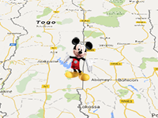

Example of dynamic creating 3d marker, and change the position of 3D marker.
Requirement: 3D Control
Usage instructions:
Add this script to map GameObject.
Click «Move Left», to increase longitude by 0.1 degrees.
Add this script to map GameObject.
Click «Move Left», to increase longitude by 0.1 degrees.
Marker3D_Example.cs
/* INFINITY CODE 2013-2016 */
/* http://www.infinity-code.com */
using UnityEngine;
namespace InfinityCode.OnlineMapsExamples
{
[AddComponentMenu("Infinity Code/Online Maps/Examples (API Usage)/Marker3D_Example")]
public class Marker3D_Example : MonoBehaviour
{
public GameObject markerPrefab;
private OnlineMapsMarker3D marker3D;
private void OnGUI()
{
if (GUI.Button(new Rect(5, 5, 100, 20), "Move Left"))
{
// Change the marker coordinates.
Vector2 mPos = marker3D.position;
mPos.x += 0.1f;
marker3D.position = mPos;
}
}
private void Start()
{
// Get instance of OnlineMapsControlBase3D (Texture or Tileset)
OnlineMapsControlBase3D control = GetComponent<OnlineMapsControlBase3D>();
if (control == null)
{
Debug.LogError("You must use the 3D control (Texture or Tileset).");
return;
}
// Marker position. Geographic coordinates.
Vector2 markerPosition = new Vector2(0, 0);
// Create 3D marker
marker3D = control.AddMarker3D(markerPosition, markerPrefab);
// Specifies that marker should be shown only when zoom from 1 to 10.
marker3D.range = new OnlineMapsRange(1, 10);
}
}
}